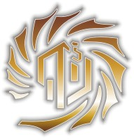
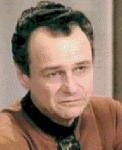

Aldeani |
|
||||||
|   |
Abitanti del mitico pianeta Aldea, hanno
sofferto di un danno a lungo temine del loro patrimonio cromosomico a causa
delle conseguenza del sistema di schermatura del pianeta. Gli Aldeaniani vivono in Unità, gruppi dove vivono insieme quelli
che hanno talenti simili e interessi in comune.
Con l'aiuto della Federazione, nel
2364 il sistema di occultamento è stato smantellato.
Custode
È un computer costruito centinaia di secoli prima del XXIV secolo dai
Progenitori che si occupa di tutte le incombenze degli Aldeani.